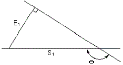
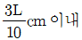
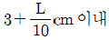
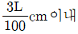
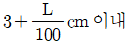
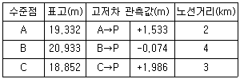
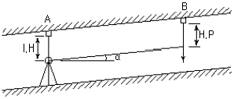
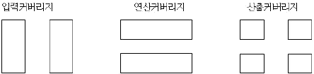

지적기사 (2014-03-02 기출문제)
1과목: 지적측량
1. 지적도근점 두 점 A, B간의 종선차 △Xba=345.67m이고 횡선차 △Yba=-456.78m일 때 Vba는?
- 52°38‘24“
- 37°07‘00“
- 52°53‘00“
- 307°07‘00“
(정답률: 62%)

2. 지적삼각점성과표에 기록ㆍ관리하여야 하는 사항이 아닌 것은?
- 부호 및 위치의 약도
- 지점삼각점의 명칭과 기준 원점명
- 소재지와 측량 연월일
- 시준점의 명칭, 방위각 및 거리
(정답률: 70%)
3. 지적삼각보조점측량을 다각망도선법으로 시행할 경우 1도선의 거리는 얼마 이하로 하여야 하는가?
- 1km
- 2km
- 3km
- 4km
(정답률: 93%)
4. 특별 소삼각점 원점의 좌표(종ㆍ횡선 수치)는?
- (10,000m, 30,000m)
- (20,000m, 60,000m)
- (200,000m, 600,000m)
- (500,000m, 200,000m)
(정답률: 56%)
5. 제주도 지역의 경우 직각좌표계 투영 원점의 종ㆍ횡선 가산수치는 각각 얼마인가?
- 20만m, 50만m
- 25만m, 50만m
- 50만m, 20만m
- 55만m, 20만m
(정답률: 93%)
6. 도면에 등록하는 사항의 제도방법 기준이 옳은 것은?
- 경계는 0.1mm 폭의 선으로 제도한다.
- 지적기준점은 0.3m 폭의 선으로 제도한다.
- 도면에 등록하는 도곽선은 0.2mm의 폭으로 제도한다.
- 동ㆍ리의 행정구역선은 0.4mm폭으로 한다.
(정답률: 59%)
7. 경위의측량방법에 따른 지적삼각점의 관측과 계산에 대한 설명으로 옳은 것은?
- 관측은 20초독 이상의 경위의를 사용한다.
- 삼각형의 각 내각은 30° 이상 150° 이하로 한다.
- 1방향각의 수평각 공차는 30초 이내로 한다.
- 1측회의 폐색 공차는 ±40초 이내로 한다.
(정답률: 76%)
8. 경위의측량방법과 전파기측량방법에 따라 교회법으로 지적삼각보조점측량을 하는 기준이 틀린 것은?
- 수평각 관측은 2대회의 방향관측법에 의한다.
- 지적삼각보조점지표의 점간거리는 평균 1km 이상 3km 이하로 한다.
- 반드시 2방향의 교회에 따른다.
- 삼각형의 각 내각은 30° 이상 120° 이하로 한다.
(정답률: 62%)
9. 지적삼각점의 선점 시 고려할 사항으로 틀린 것은?
- 측량 지역에 대하여 등밀도로 배점한다.
- 후속측량에 편리하도록 땅이 무른 곳에 설치한다.
- 삼각점의 상호 시통이 양호한 위치를 선정한다.
- 삼각형의 내각은 60°에 가깝도록 한다.
(정답률: 82%)
10. 다음 중 구조삼각원점에 해당하지 않는 것은?
- 망산원점
- 올릉원점
- 율곡원점
- 가리원점
(정답률: 57%)
11. 경계점좌표등록부 시행지역에서 지적도근점의 측량성과와 검사성과의 연결교차는 얼마이내이어야 하는가?
- 0.15m 이내
- 0.20m 이내
- 0.25m 이내
- 0.30m 이내
(정답률: 87%)
12. 그림에서 E1=20m, θ=150°일 때 S1은?

- 10.0m
- 23.1m
- 34.6m
- 40.0m
(정답률: 76%)
13. 지적삼각점측량에서 점표가 기울어진 상단을 시준 관측하고 편심거리(l)를 측정한 결과 시준선에서 직각 방향으로 1.6m 이었다. 이로 인한 각도오차(θ)는 얼마인가? (단, 삼각점간 거리(S)는 3km이다.)
- 0‘34“
- 1‘34“
- 1‘50“
- 2‘50“
(정답률: 43%)
14. 30m의 스틸테이프를 사용하여 두 점의 거리를 측정한 결과 1.5km이었고, 스틸 테이프는 표준 길이보다 20mm가 짧았다. 두 점의 실제 거리는 얼마인가?
- 1,486m
- 1,490m
- 1,494m
- 1,499m
(정답률: 79%)
15. 지적삼각점의 관측계산에서 자오선 수차의 계산단위 기준은?
- 초 아래 1자리
- 초 아래 2자리
- 초 아래 3자리
- 초 아래 4자리
(정답률: 89%)
16. 각 관측 시 발생하는 기계오차와 소거법에 대한 설명이 틀린 것은?
- 수평축 오차는 수평축이 수직축과 직교하지 않기 때문에 생기는 오차로, 정위와 반위의 평균값으로 소거된다.
- 외심 오차는 시준선에 편심이 나타나 발생하는 오차론, 정위와 반위의 평균으로 소거된다.
- 연직축 오차란 수평축과 연직축이 직교하지 않아 생기는 오차로, 정ㆍ반위의 평균으로 소거된다.
- 시준축 오차는 시준선과 수평축이 직교하지 않아 생기는 오차로, 망원경의 정위와 반위로 측정하여 평균값을 취하면 소거된다.
(정답률: 80%)
17. 경위의측량빙법으로 세부측량을 하였을 때 측량대상 토지의 경계점 간 실측거리와 경계점의 좌표에 따라 계산한 거리의 교차는 최대 얼마 이내이어야 하는가? (단, L은 실측거리로서 m단위로 표시한 수치를 말한다.)




(정답률: 94%)
18. 지상 1km2의 면적을 도상 4cm2로 표시한 도면의 축척은?
- 1/2,500
- 1/5,000
- 1/2,5000
- 1/5,0000
(정답률: 59%)
19. 세계측지계에 따르지 아니하는 지적측량은 어떤 투영법으로 표시함을 원칙으로 하는가?
- 쿠르거 투영법
- 가우스 상사이중투영법
- UTM 투영법
- Lambert 투영법
(정답률: 98%)
20. 축척 1/1,200 지역에서 원면적 1,600m2인 토지를 분할하고자 할 때 분할 후 각 필지의 면적의 합계와 분할 전 면적과의 오차의 허용범위는?
- 32m2
- 47m2
- 52m2
- 63m2
(정답률: 58%)
2과목: 응용측량
21. 수준측량에서 표척(수준척)을 세우는 횟수를 짝수로 하는 주된 이유는?
- 표척의 영점오차 소거
- 시준축에 의한 오차의 소거
- 구차의 소거
- 기차의 소거
(정답률: 60%)
22. 지하시설물의 탐사방법으로 수도관로 중 PVC 또는 플라스틱 관을 찾는 데 주로 이용되는 방법은?
- 전자탐사법
- 자기탐사법
- 음파탐사법
- 전기탐사법
(정답률: 86%)
23. 수준점 A, B, C에서 수준측량을 한 결과가 표와 같을 때 P점의 최확값은?

- 20.839m
- 20.842m
- 20.855m
- 20.869m
(정답률: 72%)
24. 지형의 표시방법 중 길고 짧은 선으로 지표의 기복을 나타내는 방법은?
- 영선법
- 채색법
- 등고선법
- 점고법
(정답률: 82%)
25. 지형도에서 92m 등고선 상의 A점과 118m 등고선 상의 B점 사이에 일정한 기울기 8%의 도로를 만들었을 때 AB 사이 도로의 실제 결사거리는?
- 347m
- 339m
- 332m
- 326m
(정답률: 52%)
26. 노선측량에서 접선장(T.L)을 구하는 식은? (단, I:교각, R:곡선반지름)
- T.L=R[sec(I/2)-1]
- T.L=R[1-cos(I/2)]
- T.L=R×tan(I/2)
- T.L=R×I[Red]
(정답률: 85%)
27. 수치사진측량의 영상정합(image matching) 방법에 해당되지 않는 것은?
- 형상기준 정합
- 미분연산자 정합
- 영역기준 정합
- 관계형 정합
(정답률: 81%)
28. GPS에서 에포크(epoch)의 의미로 옳은 것은?
- GPS 위성들의 위치를 기록한 표
- GPS 위성을 포함하는 대원(Great Circle)의 평면
- 신호를 수신하는 순간의 시간 간격
- GPS 안테나와 수신기를 연결하는 케이블
(정답률: 84%)
29. 어떤 도로에서 원곡선의 반지름이 200m일 때 현의 길이 20m에 대한 편각은?
- 2°51'53"
- 3°49‘11“
- 5°44‘02“
- 8°21‘12“
(정답률: 57%)
30. 비행고도 3,000m인 항공기에서 초점거리 150mm인 카메라로 촬영한 실제길이 50m 교량의 수2직사진에서의 길이는?
- 1.0mm
- 1.5mm
- 2.0mm
- 2.5mm
(정답률: 63%)
31. 위성측량에서 GPS에 의하여 위치를 결정하는 기하학적인 원리는?
- 위성에 의한 평균계산법
- 무선항법에 의한 후방교회법
- 수신기에 의하여 처리하는 자료해석법
- GPS에 의한 폐합 도선법
(정답률: 61%)
32. 사진측량의 특징에 대한 설명으로 옳지 않은 것은?
- 측량대상의 범위가 넓다.
- 대축척일수록 경제적이다.
- 측량의 정확도가 균일하다.
- 분업화에 의한 작업이 능률적이다.
(정답률: 72%)
33. 수평거리가 18km일 때 광선의 굴절에 의한 오차는? (단, 굴절계수는 0.14, 지구의 곡선 반지름은 6,370km)
- -21.87m
- -6.12m
- -5.36m
- -3.56m
(정답률: 48%)
34. 지모의 형태를 표시하고 표고의 높이를 쉽게 파악하기 위해 주곡선 5개마다 표시하는 등고선은?
- 수애선
- 계곡선
- 간곡선
- 조곡선
(정답률: 69%)
35. 적외선사진의 특성에 관한 설명으로 옳지 않은 것은?
- 짧은 파장대가 차단되어 영상이 선명하다.
- 깨끗한 물일수록 밝은 영상 색조를 나타낸다.
- 식물피복의 식별이 용이하다.
- 육지와 해면의 경계가 명확하게 식별된다.
(정답률: 59%)
36. 반지름이 다른 2개의 단곡선이 그 접속점에서 공통접선을 갖고 그것들의 중심이 공통접선과 같은 방향에 있는 곡선은?
- 반향곡선
- 머리핀곡선
- 복심곡선
- 종단곡선
(정답률: 78%)
37. 수준측량에서 발생하는 오차 중 정오차인 것은?
- 시차에 의한 오차
- 태양의 직사광선에 의한 오차
- 표척을 잘못 읽어 생기는 오차
- 지구곡률에 의한 오차
(정답률: 82%)
38. 터널 내 측량에서 고저의 변동, 중심선의 이동을 기록하여 두고 수회 관측하여도 틀릴 경우의 원인조사 사항과 거리가 먼 것은?
- 측량기계의 이상 여부
- 터널 내에 설치한 도벨 상태의 이상 여부
- 지산이 움직이고 있는가의 여부
- 삼각측량 결과 오차점검의 여부
(정답률: 54%)
39. 항공사진은 촬영방향에 의한 카메라의 광축에 따라 분류할 수 있다. 이 분류에 속하지 않는 것은?
- 수직사진
- 경사사진
- 수평사진
- 지상사진
(정답률: 62%)
40. 경사 터널의 고저차를 구하기 위해 그림과 같이 관측하여 I.H=1.15m, H.P=1.56m, 경사거리=31.00m, 고저각 α+30°의 결과를 얻었을 때 AB의 고저차는?

- 15.91m
- 16.93m
- 17.95m
- 18.97m
(정답률: 77%)
3과목: 토지정보체계론
41. 다음 중 다목적 지적제도의 구성요소가 아닌 것은?
- 지적중첩도
- 주민등록부
- 필지식별자
- 측지기준망
(정답률: 84%)
42. GIS의 데이터모델을 공간데이터와 속성데이터로 구분할 때, 다음 중 공간데이터와 가장 거리가 먼 것은?
- 수치지적도
- 수치영상
- 인공위성영상데이터
- 토지가격데이터
(정답률: 89%)
43. 3차원 지적정보를 구축할 때, 지상 건축물의 권리관계등록과 가장 밀접한 관련성을 가지는 도형정보는?
- 수치지도
- 토지피복도
- 토지이용계획도
- 층별이용계획도
(정답률: 73%)
44. 지적공부의 효율적인 관리 및 활용을 위하여 지적정보 전담 관리기구를 설치ㆍ운영하는 자는?
- 안전행정장관
- 국토지리정보원장
- 대한지적공사장
- 국토교통부장관
(정답률: 82%)
45. 데이터베이스관리시스템(DBMS;Database Mangement System)에 대한 설명으로 틀린 것은?
- DBMS는 데이터베이스를 생성ㆍ관리ㆍ제공하는 집합이라고 할 수 있다.
- 파일처리방식에 비하여 시스템구성이 단순하여 자료의 손실 가능성이 적다.
- 데이터를 저장하고 정보를 추출하는 데 효율적이로 편리한 방법을 사용자에게 제공하는 데 목적이 있다.
- 데이터를 안정적으로 관리하고 효율적인 검색 및 데이터베이스의 질의 언어를 지원하는 것이 주요 기능이다.
(정답률: 84%)
46. 공간데이터의 특징에 대한 설명으로 틀린 것은?
- 벡터데이터는 대상물을 점, 선, 면을 사용하여 표현하는 것이다.
- 벡터데이터에서 연속적인 복잡한 선은 노드(Node)와 버텍스(Vertex)를 통해 나타낸다.
- 객체들 간의 공간관계를 가지지 못하고 좌표들이 길게 연결되어 있는 구조를 선형데이터구조랗 한다.
- 위상구조가 구축된 후 선과 선의 교차 지점에 노드가 자동으로 생성되며, 이는 좌표값으로 그 위치가 자동 인식된다.
(정답률: 63%)
47. 다음 중 과거 필지중심토지정보체계(PBLIS)의 개발 목적으로 옳지 않은 것은?
- 행정처리 단계 축소 및 비용 절감
- 지적정보 및 부가정보의 효율적 통합 관리
- 지적재조사 사업의 기반 확보
- 대장과 도면정보 시스템의 분리 운영
(정답률: 75%)
48. 스캐닝 방식에 의한 공간데이터의 취득에 대한 설명이 틀린 것은?
- 손상된 도면을 입력하기에 적합하다.
- 입력도면의 평탄성 오차가 발생한다.
- 복잡한 도면을 입력할 경우에는 작업시간이 단축된다.
- 스캐너의 정밀도에 따라 이미지 자료의 변형이 발생한다.
(정답률: 65%)
49. 관계형 DBMS에서 자료를 만들고 조회할 수 있는 도구로서 처음 개발된 것으로, DBMS를 제어하고 DBMS와 대화할 수 있는 관계형 데이터베이스의 표준언어는?
- SQL
- ADT
- HTML
- COBOL
(정답률: 95%)
50. 크기가 다른 정사각형을 이용하여, 공간을 4개의 동일한 면적으로 분할하는 작업을 하나의 속성값이 존재할 때까지 반복하는 래스터 자료 압축 방법은?
- 런렝스코드(Run-length code) 기법
- 체인코드(Chain code) 기법
- 블록코드(Block code) 기법
- 사지수형(Quadtree) 기법
(정답률: 84%)
51. 데이터에 대한 정보로서 데이터의 내용, 품질, 조건 및 특성에 대한 정보를 포함하는 정보의 이력서라 할 수 있는 것은?
- 데이터베이스(Database)
- 라이브러리(Library)
- 메타데이터(Metadata)
- 인덱스(Index)
(정답률: 90%)
52. 필지식별번호에 대한 설명으로 틀린 것은?
- 각 필지별 등록 사항의 저장과 수정 등을 용이하게 처리할 수 있는 고유번호이다.
- 필지에 관련된 자료의 공통적인 색인 번호 역할을 한다.
- 각 필지에 부여하며 가변성이 있는 번호다.
- 필지별 대장의 등록사항과 도면의 등록사항을 연결하는 기능을 향상시켜 주고 있다.
(정답률: 75%)
53. 지리정보시스템(GIS)에 관한 설명이 틀린 것은?
- 효율적인 수치지도를 제작할 수 있다.
- 실세계의 공간현상에 대한 공간모델링이 가능하다.
- 입지분석을 위한 공간분석 기능을 제공한다.
- 다양한 자료유형을 통합할 수 있지만, 3차원적 표현은 불가능하다.
(정답률: 86%)
54. 두 선이 연결될 때 한 점에 엉뚱한 좌표가 입력되어 튀어나온 상태의 오류는?
- Over lay
- Sliver Ploygon
- Spike
- Under Shoot
(정답률: 81%)
55. 다음은 중첩 연산 기능 중 어느 것인가?

- Clip
- Split
- Intersect
- Union
(정답률: 74%)
56. 토지정보시스템(LIS)에 관한 설명으로 옳은 것은?
- 토지와 관련된 공간정보를 수집ㆍ저장ㆍ처리ㆍ관리하기 위한 시스템이다.
- 도시기반시설에 관한 자료를 저장하여 효율적으로 관리하는 시스템이다.
- 토지개발에 따른 투기현상을 방지하는 데 주목적을 두고 있다.
- 토지와 관련된 등록부와 도면 작성을 위한 도해지적 공부의 확보를 위한 것이다.
(정답률: 78%)
57. 다음 중 토지정보시스템의 구성요소에 해당하지 않는 것은?
- 조직과 인력
- 처리시간
- 소프트웨어
- 자료
(정답률: 87%)
58. 사용자권한 등록파일에 등록하는 사용자의 대한 설명이 틀린 것은?
- 사용자는 비밀번호가 누설될 우려가 있는 때에는 즉시 이를 변경하여야 한다.
- 사용자는 비밀번호는 등록관리청별로 일련번호를 부여하여야 한다.
- 사용자의 비밀번호는 다른 사람에게 누설하여서는 아니 된다.
- 사용자의 비밀번호는 6자리부터 16자리까지의 범위에서 사용자가 정하여 사용한다.
(정답률: 81%)
59. 토지 고유번호의 코드 구성 기준이 옳은 것은?
- 행정구역코드 10자리, 대장구분 1자리, 지번 4자리 합계 15자리로 구성된다.
- 행정구역코드 8자리, 대장구분 1자리, 지번 8자리 합계 17자리로 구성된다.
- 행정구역코드 10자리, 대장구분 1자리, 지번 8자리 합계 19자리로 구성된다.
- 행정구역코드 12자리, 대장구분 1자리, 지번 10자리 합계 23자리로 구성된다.
(정답률: 91%)
60. 벡터데이터의 위상구조를 이용하여 가능한 분석 내용이 아닌 것은?
- 분리성
- 포함성
- 인접성
- 연결성
(정답률: 83%)
4과목: 지적학
61. 초기의 지적도에 대한 설명으로 틀린 것은?
- 지적도에는 토지 경계와 지번, 지목이 등록되었다.
- 지적도 도곽 내의 산림에는 등고선을 표시하여 표옥에 의한 지형구별이 용이하도록 하였다.
- 토지분할의 경우에는 지적도 정리시 신 경계선을 흑색으로 정리하였으나 그 후 양홍색으로 변경하였다.
- 조사지역 외의 토지에 대해서는 이용현황에 따라 활자로 산(山), 해(海), 호(湖), 도(道), 천(川), 구(溝) 등으로 표기하였다.
(정답률: 85%)
62. 우리나라에서 자호제도가 처음 사용된 시기는?
- 고려
- 백제
- 신라
- 조선
(정답률: 77%)
63. 토지조사사업에 대한 설명으로 틀린 것은?
- 조사대상은 전국 평야부의 토지 및 낙산임야이다.
- 도면축척은 1:1,200, 1:2,400, 1:3,000이었다.
- 조사측량기관은 임시 토지조사국이었다.
- 사정권자는 임시 토지조사국장이었다.
(정답률: 62%)
64. 지적재조사사업의 목적과 거리가 먼 것은?
- 지적불부합지의 해소
- 능률적인 지적관리체제 개선
- 경계복원능력의 향상
- 토지거래질서의 확립
(정답률: 75%)
65. 다음 중 지적형식주의와 가장 관계있는 사항은?
- 등록의 원칙
- 특정화의 원칙
- 인적 편성의 원칙
- 공시의 원칙
(정답률: 77%)
66. 신라의 토지측량에 사용된 구장산술의 방전장의 내용에 속하지 않는 토지형태는?
- 직전
- 양전
- 환전
- 구고전
(정답률: 65%)
67. 고구려에서 토지면적 단위체계로 사용된 것은?
- 경무법
- 두락법
- 결부법
- 수등이척법
(정답률: 90%)
68. 탁지부 양지국에 관한 설명으로 틀린 것은?
- 1904년 탁지부 양지국관제가 공포되면서 상설기구로 설치되었다.
- 공문서류의 편찬 및 조사에 관한 사항을 담당하였다.
- 관습조사(慣習調査) 사항을 담당하였다.
- 토지측량에 관한 사항을 담당하였다.
(정답률: 75%)
69. 조선시대에 양전개정론(量田改正)을 주장하지 아니한 사람은?
- 정약용
- 서유구
- 이기
- 김정호
(정답률: 81%)
70. 토지정보시스템(LIS)은 다음 중 어느 지적에 해당하는가?
- 과세지적
- 법지적
- 다목적지적
- 경제지적
(정답률: 85%)
71. 우리나라 토지대장과 같이 지번 순서에 따라 등록되고 분할되더라도 본번과 관련하여 편철하고 소유자의 변동이 있을 때에 계속 수정하여 관리하는 토지등록부 편성방법은?
- 인적 편성주의
- 연대적 편성주의
- 물적 편성주의
- 인적ㆍ물적 편성주의
(정답률: 66%)
72. 지역선에 대한 설명이 아닌 것은?
- 소유자가 동일한 토지와의 구획선
- 소유자를 알 수 없는 토지와의 구획선
- 임야조사사업 당시의 사정선
- 조사지와 비조사지의 지계선
(정답률: 54%)
73. 적극적 등록제도에 대한 설명으로 틀린 것은?
- 지적측량이 실시되지 않으면 초지의 등기도 할 수 없다.
- 토렌스시스템은 이 제도의 발달된 형태이다.
- 토지 등록상의 문제로 인해 선의의 제3자가 받은 피해는 법적으로 보호되고 있다.
- 토지 등록을 의무화하지 않는다.
(정답률: 93%)
74. 결계 결정 시 결계불가분의 원칙이 적용되는 이유로 틀린 것은?
- 실지 경계 구조물의 소유권을 인정하지 않는다.
- 필지 간 경계는 1개만 존재한다.
- 경계는 인접 토지에 공통으로 작용한다.
- 경계는 폭이 없는 기하학적인 선의 의미와 동일하다.
(정답률: 74%)
75. 토렌스시스템의 기본 이론이 아닌 것은?
- 거울이론
- 지가이론
- 커튼이론
- 보험이론
(정답률: 87%)
76. 현재의등록사항만 논의되어야 한다는 의미로서 현행 권리증명서에 기재된 권리가 실제의 권리관계와 일치하여야 한다는 토렌스시스템의 기본 이론은?
- 거울이론
- 보험이론
- 지가이론
- 커튼이론
(정답률: 45%)
77. 토지조사사업 당시 소유권 조사에서 사정한 사항은?
- 경계, 면적
- 강계, 소유자
- 소유자, 지번
- 소유자, 면적
(정답률: 80%)
78. 임야조사사업 당시 사정기관은?
- 임야심사위원회
- 토지조사위원회
- 도지사
- 법원
(정답률: 75%)
79. 대만에서 지적재조사를 의미하는 것은?
- 국토조사
- 지적도 증축
- 지도작제
- 토지가옥조사
(정답률: 63%)
80. 토지에 대한 등록사항을 토지소유자, 이해관계인 및 기타 일반 국민에게 신속하고 공정하며 정당하게 이용할 수 있게 하는 지적의 이념은?
- 공시주의
- 공산주의
- 민원주의
- 공개주의
(정답률: 60%)
5과목: 지적관계법규
81. 다음 중 면적의 최소 등록단위가 다른 하나는? (단, 경계점좌표등록부에 등록하는 지역의 경우는 고려하지 않는다.)
- 1/600
- 1/1,000
- 1/2,400
- 1/1,600
(정답률: 65%)
82. 다음 중 1년 이하의 징역 또는 1천만원 이하의 벌금에 처하는 경우는?
- 고의로 측량성과를 다르게 한 자
- 본인 또는 배우자가 소유한 토지에 대한 지적측량을 한 자
- 지적측량수수료 외의 대가를 받은 지적측량기술자
- 속임수로 지적측량업과 관련된 입찰의 공정성을 해친 자
(정답률: 62%)
83. 토지소유자가 지적공부의 등록사항에 잘못이 있음을 발견하여 지적소관청에 그 정정을 신청할 때, 경계 또는 면적의 변경을 가져오는 경우 신청서와 함께 첨부하여 제출하여야 하는 서류는?
- 등록사항 정정 측량성과도
- 토지대장등본
- 등기전산정보자료
- 축척변경 지번별 조서
(정답률: 70%)
84. 이미 완료된 등기에 대해 등기 절차상에 착오 또는 유루(遺漏)가 발생하여 원시적으로 등기사항과 실체사항과의 불일치가 발생되었을 때 이를 시정하기 위해 행하여지는 등기는?
- 부기등기
- 경정등기
- 회복등기
- 기입등기
(정답률: 82%)
85. 대한지적공사의 설립등기사항에 해당하지 않는 것은?
- 명칭
- 자산에 관한 사항
- 조직 및 기구에 관한 사항
- 이사 미 감사의 성명과 주소
(정답률: 35%)
86. 국토의 계획 및 이용에 관한 법률에 따른 용도구역에 해당하지 않는 것은?
- 개발제한구역
- 도시자연공원구역
- 개발유도관리구역
- 시가와조정구역
(정답률: 66%)
87. 지적측량업의 등록을 하려는 자가 신청서에 첨부하여 제출하여야 하는 서류가 아닌 것은?
- 보유하고 있는 인력에 대한 측량기술 경력증명서
- 등록을 하려는 자의 은행잔고증명서
- 보유하고 있는 장비의 명세서
- 보유하고 있는 측량기술자의 명단
(정답률: 87%)
88. 지적소관청이 청산금을 산정한 결과 증가된 명적에 대한 청산금의 합계와 감소된 면적에 대한 청산금의 합계에 차액이 생긴 경우 처리방법으로 옳은 것은?
- 초과액은 토지소유자의 수입으로 하고 부족액은 토지소유자가 부담한다.
- 초과액은 토지소유자의 수입으로 하고 부족액은 그 지방자치단체가 부담한다.
- 초과액은 그 지방자치단체의 수입으로하고 부족액은 토지소유자가 부담한다.
- 초과액은 그 지방자치단체의 수입으로하고 부족액은 그 지방자치단체가 부담한다.
(정답률: 78%)
89. 다음 중 도시ㆍ군관리계획의 입안권자가 아닌 것은?
- 특별시장
- 광역시장
- 군수
- 구청장
(정답률: 74%)
90. 중앙지적위원회에 관한 설명으로 옳지 않은 것은?
- 위원장은 국토교통부의 지적업무 담당 국장이 된다.
- 위원은 지적에 관한 학식과 경험이 풍부한 사람 중에서 중앙지적위원회의 위원장이 임명한다.
- 회의는 재적위원 과반수의 출석으로 개의하고 출석위원 과반수의 찬성으로 의결한다.
- 위원장 1명과 부위원장 1명을 포함하여 5명 이상 10명 이하의 위원으로 구성한다.
(정답률: 73%)
91. 지적소관청을 직접 방문하여 1필지를 기준으로 토지대장 또는 임야대장에 대한 열람신청을 하거나 등본발급신청을 할 경우 납부해야 하는 수수료는?
- 열람:200원, 등본발급:300원
- 열람:300원, 등본발급:500원
- 열람:500원, 등본발급:700원
- 열람:700원, 등본발급:1,000원
(정답률: 75%)
92. 국토의 계획 및 이용에 관한 법률에 따른 국토의 용도 구분 4가지에 해당하지 않는 것은?
- 보존지역
- 관리지역
- 도시지역
- 농림지역
(정답률: 57%)
93. 디상 경계점 등록부의 등록사항이 아닌 것은?
- 토지의 소재와 지번
- 경계점 등록자의 정보
- 경계점의 사진 파일
- 경계점 위치 설명도
(정답률: 74%)
94. 다음 중 지목이 잡종지에 해당하지 않는 것은?
- 갈대밭
- 수신소
- 동물원
- 도축장
(정답률: 65%)
95. 토지소유자가 하여야 하는 신청을 대신할 수 있는 자가 아닌 경우는?
- 민법 제404조에 따른 채권자
- 공공사업에 따라 학교용지의 지목으로 되는 경우 해당 토지를 관리하는 지방자치단체의 장
- 주택법에 따른 공동주택의 부지인 경우 집합건물의 소유 및 관리에 관한 법률에 따른 관리인
- 국가가 취득하는 토지인 경우 토지를 관리하는 행정기관의 장
(정답률: 60%)
96. 지목변경 없이 등록전환을 신청할 수 없는 경우는?
- 관계 법령에 따른 토지의 형질변경 또는 건축물의 사용승인으로 인하여 지목변경이 수반되는 경우
- 대부분의 토지가 등록전환되어 나머지 토지를 임야도에 계속 존치하는 것이 불합리한 경우
- 임야도에 등록된 토지가 사실상 형질변경되었으나 지목변경을 할 수 없는 경우
- 도시ㆍ군관리계획선에 따라 토지를 분할하는 경우
(정답률: 59%)
97. 지적공부의 복구절차 등에 관한 내용이 옳은 것은?
- 복구측량을 한 결과가 복구자료와 부합하지 아니하는 때에는 토지소유자 및 이해관계인의 동의를 받아 경계 또는 면적 등을 조정할 수 있다.
- 복구측량을 한 결과가 복구자료와 부합하지 아니하는 때에는 지적소관청의 직권으로 경계 또는 면적 등을 조정한다.
- 지적공부를 복구하려는 경우 지적측량업자가 복구자료를 조사하여 지적복구자료 조사서를 작성하여야 한다.
- 복구자료의 조사 또는 복구측량 등의 완료되어 지적공부를 복구하려는 토지의 표시 등을 시ㆍ도 게시판 및 인터넷 홈페이지에 30일 이상 게시하여야 한다.
(정답률: 49%)
98. 지적측량업자의 업무범위에 해당하지 않는 것은?
- 경계점좌표등록부가 있는 지역에서의 지적측량
- 도시개발사업 등이 끝남에 따라 하는 지적확정측량
- 지적재조사에 관한 특별법에 따른 사업지구에서 실시하는 지적재조사측량
- 도해세부측량지역의 등록전환측량에 대한 성과검사측량
(정답률: 72%)
99. 측량기준점을 설치하거나 토지의 이동을 조사하는 자가 타인의 토지 등에 출입하는 것에 대한 내용이 틀린 것은?
- 해 뜨기 전이나 해가 진 후에는 그 토지 등의 점유자가 승낙 없이 택지나 담장 또는 울타리로 둘러싸인 타인의 토지에 출입할 수 없다.
- 토지 등의 점유자는 정당한 사유 없이 출입행위를 방해하거나 거부하지 못한다.
- 출입 행위를 하려는 자는 그 권한을 표시하는 증표와 허가증을 지니고 관계인에게 이를 내보여야 한다.
- 증표와 허가증의 발급권자는 국토교통부장관이다.
(정답률: 63%)
100. 부동산등기법에 따라 등기를 할 수 있는 권리가 아닌 것은?
- 소유권
- 저당권
- 지상권
- 점유권
(정답률: 75%)